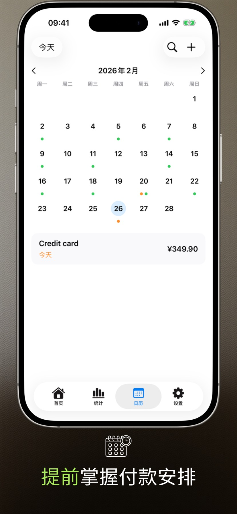
2.3.1 版本新内容
- 改进了小组件的运行。
- 付款列表在 Mac 上正常显示。
应用界面
iPhone 和 iPad 上的 6 个关键界面，展示 Payment Calendar 的规划节奏。
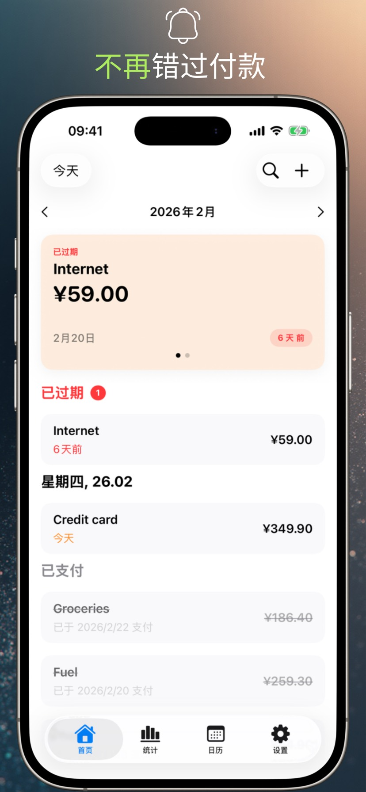
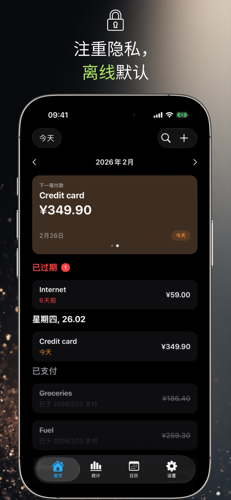
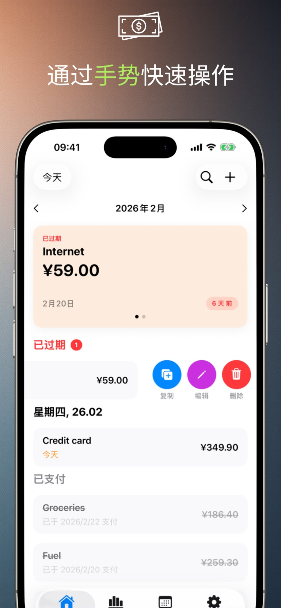
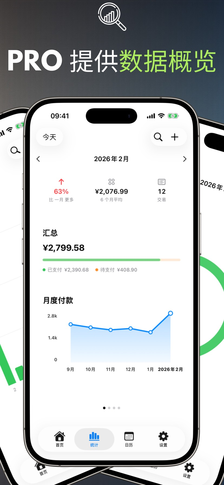
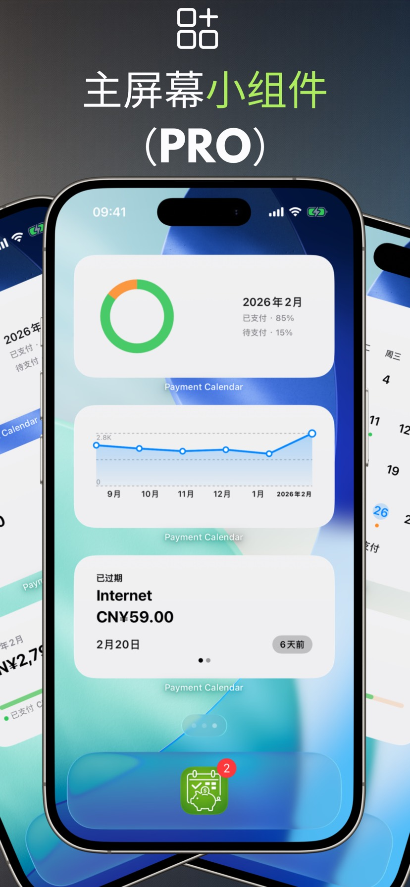
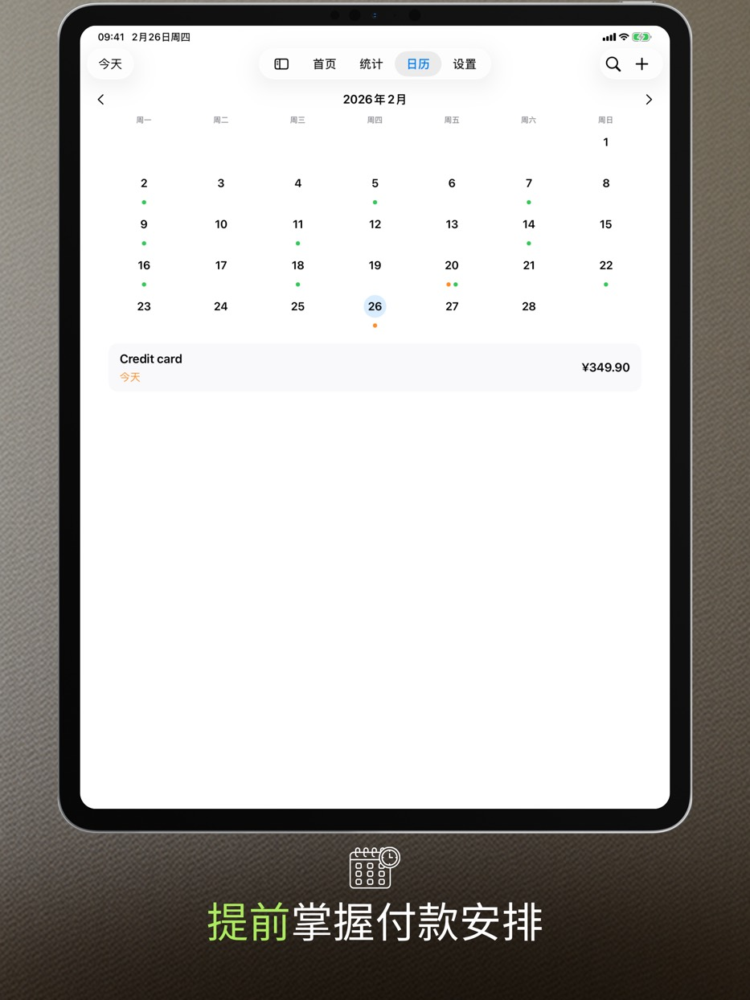
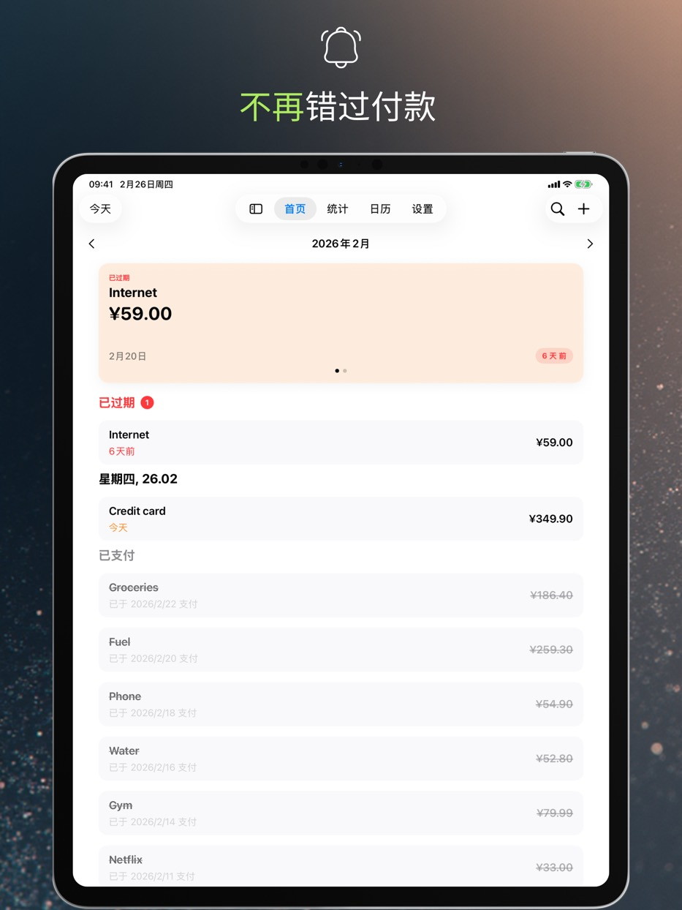
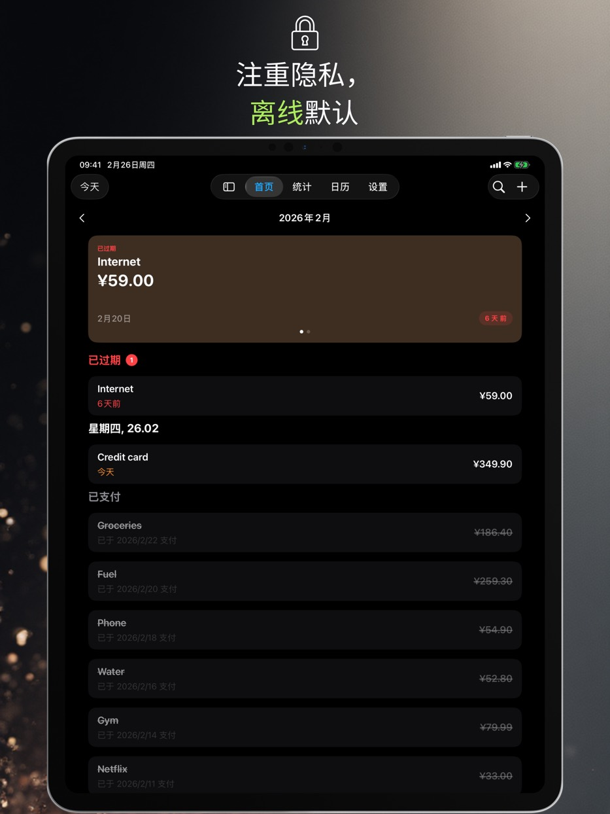
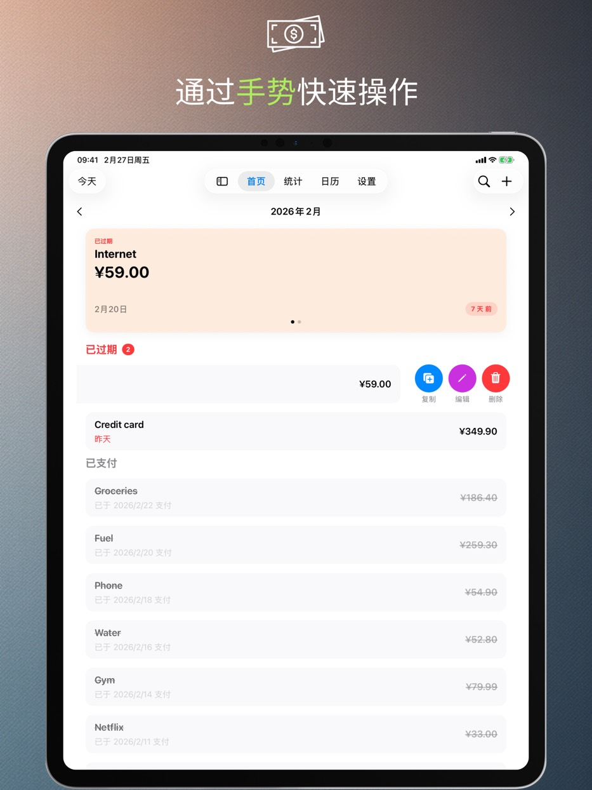
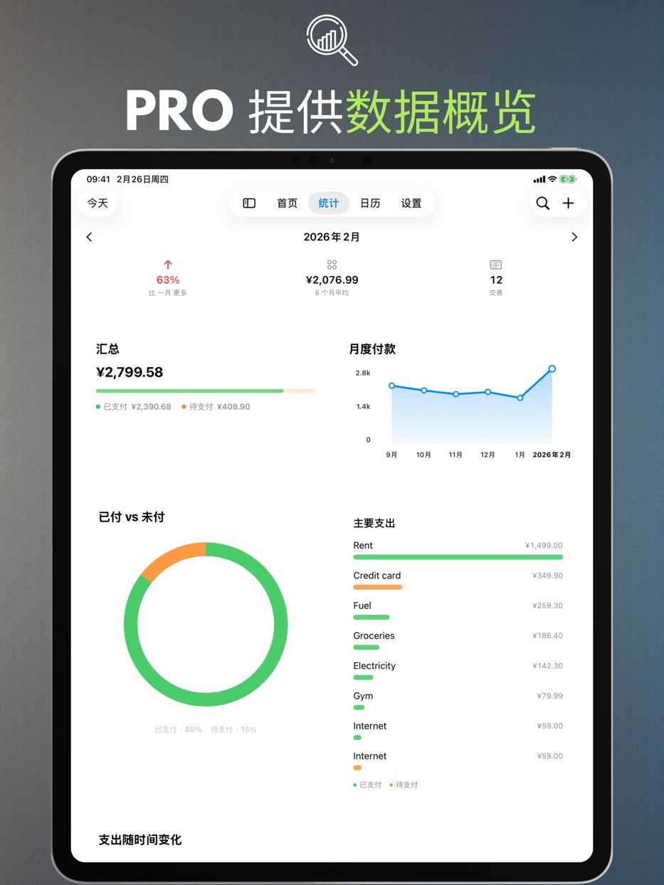
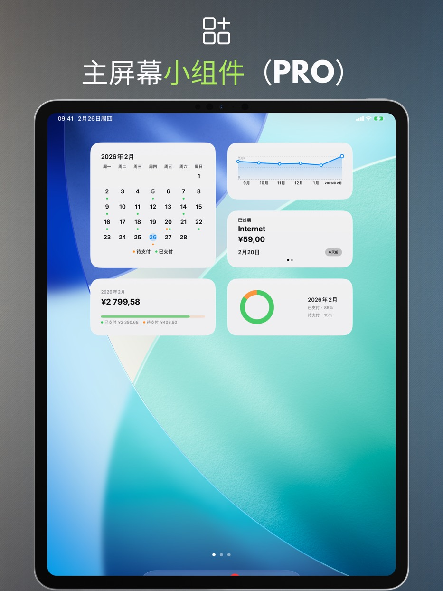
应用功能
以下功能全部免费，无需注册账户：清晰的月视图、快速录入付款，以及让你从容规划开支的提醒。
付款日历
在一个地方查看即将到期的日期和您的付款列表。
提醒
在到期日当天或提前几天收到通知。
手势和快速操作
通过滑动标记为已付款、编辑或复制。
搜索
按名称、金额或备注查找付款。
个性化设置
货币、一周开始日、主题和适合您的布局。
支持 iPad
窗口模式与分屏浏览，并支持键盘和键盘快捷键。
回收站
删除的付款会在回收站保留 30 天，随时可以恢复。
辅助功能
应用跟随系统文字大小，支持“减弱动态效果”，且从不仅用颜色表示付款状态。
隐私
您的数据保存在设备上。
Payment Calendar 无需账户，不跟踪您的活动。iCloud 同步是可选的，默认关闭。
无广告，无分析
我们不使用第三方 SDK 进行分析或广告。
数据控制
随时在应用内删除您的数据或通过卸载删除。
专业版功能
付费扩展：统计、小组件、周期性付款、同步与导出。可选择按月订阅、按年订阅，或一次性买断。
统计和趋势
月度摘要加 6 个月趋势视图。
小组件
四个主屏幕小组件：下一笔付款、月度汇总、趋势和月历网格。
循环付款
自动创建重复付款。
iCloud 同步
启用后在您的设备间保持数据同步。
CSV/PDF 导出
分享摘要或归档您的数据。
支持的语言
Payment Calendar 支持波兰语、英语、西班牙语、德语、法语、意大利语、乌克兰语、瑞典语、简体中文、日语和葡萄牙语（巴西）。
常见问题（FAQ）
查看有关 Payment Calendar 的常见问题与解答。
下载前
如何避免忘记账单到期？
Payment Calendar 会在月视图中显示所有即将到期的付款，并在到期前发送提醒，让你提前知道该付什么、什么时候付。
如何管理订阅，避免为不需要的服务继续付费？
将订阅添加为周期性付款（PRO 功能）——应用会在每次续费前自动提醒你，方便你及时发现并取消不再需要的订阅。
有没有一款像日历、但专门用来管理账单和付款的应用？
有，这正是 Payment Calendar 的设计理念——月视图显示的是付款而不是日程，清楚标记哪些已付清、哪些还在等待到期。
如何在不注册账号的情况下管理付款？
Payment Calendar 无需注册或登录——安装后即可直接添加付款。数据保存在本地设备上，除非你自己开启可选的 iCloud 同步。
Payment Calendar 和手机自带的日历有什么区别？
普通日历显示的是日程，而不是付款——没有"已付清 / 待付款"状态，没有针对账单的提醒，也无法查看支出情况。Payment Calendar 专为付款设计：包含金额、货币、周期设置，以及每月实际支出的统计。
基础信息
Payment Calendar 是什么应用？
Payment Calendar 是一款适用于 iPhone 和 iPad（iOS/iPadOS）的账单与待付账款日历应用。你可以快速查看即将到期的付款，并将其标记为已支付。
应用可以离线使用吗？
可以。应用支持离线使用，不需要账号，也不需要网络连接。数据保存在本地设备中。可选的 iCloud 同步（PRO 版本）可让你在多个 Apple 设备间访问数据。
Payment Calendar 支持哪些设备？
应用可在搭载 iOS/iPadOS 18.0 或更新系统的 iPhone 和 iPad 上运行。你也可以把它装到搭载 Apple 芯片的 Mac 上，它在那里以 iPad 应用的形式运行（“Designed for iPad”），而不是独立的 macOS 版本。
隐私与数据
我的财务数据安全吗？
安全。Payment Calendar 不收集用户数据，也不要求登录。数据保留在你的设备中；可选的 iCloud 同步（PRO 版本）在 Apple 生态内完成。
Payment Calendar 会连接我的银行账户吗？
不会。Payment Calendar 不会连接银行，也不会自动获取交易记录——所有付款都由你手动添加。这是一个刻意的选择：应用从设计之初就以隐私为先，不需要访问你的银行账户也能正常使用。
功能
我可以添加周期性付款和订阅吗？
可以。你可以添加周期性付款，例如订阅和每月账单。该功能在 PRO 版本中提供。
应用会发送即将到期付款提醒吗？
会。你可以设置提醒，避免错过任何付款。
Payment Calendar 支持哪些货币？
应用支持 22 种货币，包括美元、欧元、英镑、瑞士法郎，捷克、瑞典、挪威和丹麦克朗，福林、格里夫纳、日元、人民币、雷亚尔，以及哥伦比亚比索、蒙古图格里克、墨西哥比索、智利比索和新西兰元。格式（符号、分隔符、舍入）会自动适配你所在设备的地区设置。
我可以导出我的付款记录吗？
可以，PRO 版本支持。你可以将数据导出为 CSV 或 PDF 文件，用于生成报告或存档。
我可以修改实际付款日期吗？
可以。在编辑已付款项时，表单中有"已付款日期"字段，可以设置实际的付款日期。统计仍按到期日分组，而不是按付款日期。
有主屏幕小组件吗？
是的，PRO 版本提供。共有四个主屏幕小组件可选：下一笔付款、月度汇总、支出趋势和月历网格——都无需打开应用。
我不小心删掉了一笔付款，还能找回来吗？
可以。删除的付款会进入回收站并保留 30 天。回收站在“设置”里，恢复一条记录只需轻点一下。
Payment Calendar 是家庭预算管理应用吗？
不是。它是账单日历，用于跟踪即将到期和已支付的款项。不提供收入、账户余额或预算管理功能。
同步与语言
数据会在 iPhone 和 iPad 之间同步吗？
会，前提是你开启了可选的 iCloud 同步（PRO 功能）——开启后，你的付款数据会在登录同一 iCloud 账户的所有 Apple 设备间同步。未开启该选项时，数据仅保存在当前设备本地。
应用支持哪些语言？
Payment Calendar 支持 11 种语言：波兰语、英语、西班牙语、德语、法语、意大利语、乌克兰语、瑞典语、简体中文、日语和葡萄牙语（巴西）。
平台
Payment Calendar 有安卓版本吗？
没有。Payment Calendar 是 iPhone 和 iPad 应用（iOS/iPadOS）；在搭载 Apple 芯片的 Mac 上以“Designed for iPad”模式运行。没有安卓版本。
有 Apple Watch 版本吗？
目前还没有，但 watchOS 支持已列入应用的开发计划。
价格与专业版
不付费订阅也可以使用吗？
可以。基础功能可免费使用。PRO 功能（如周期性付款和 iCloud 同步）需要订阅或一次性购买。
PRO 版本多少钱？可以取消订阅吗？
价格因地区而异，具体以应用内和 App Store 显示为准。可选择按月、按年订阅，或一次性购买终身版（Lifetime）。订阅可在 Apple ID 设置中管理和取消，与 App Store 中的其他订阅相同。
反馈与支持
缺少某种货币，或者我有新功能的想法，该怎么办？
请发送邮件至 payment_calendar@icloud.com。每一封邮件我都会亲自阅读并回复——用户的反馈和想法确实会影响后续版本的开发。